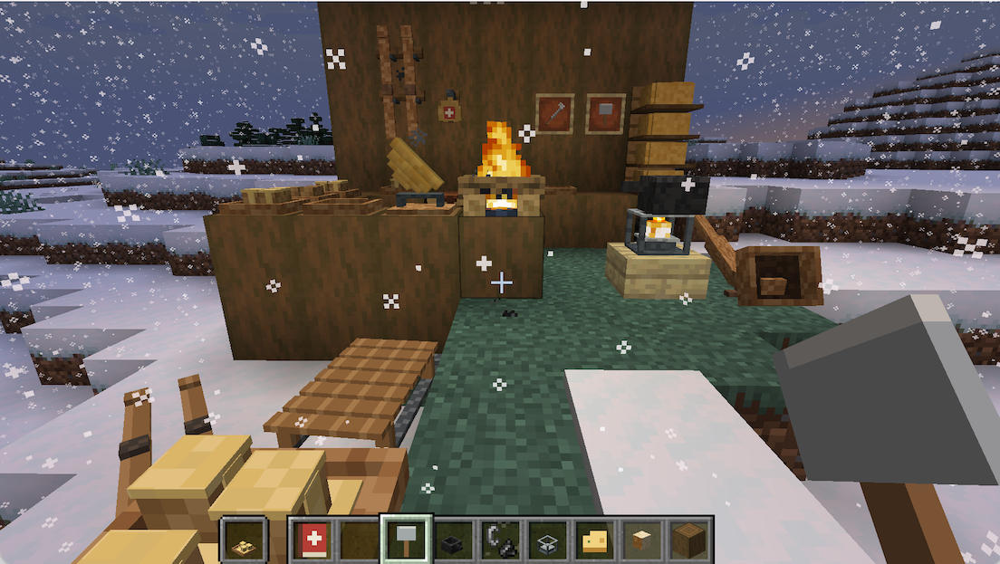

MOUNTAIN LIFE
Decorate your chalet
Discover alpine herbs in high meadows. Display your cheese wheels on wooden shelves, hang a bell by the door and put your skis away after a day outside.
 HELVETIA
HELVETIA
A snowy run before supper. Cheese melting by the fire. An alphorn sounding across the valley. Helvetia brings mountain life, food, sport and music to Minecraft, inspired by Switzerland.

Discover alpine herbs in high meadows. Display your cheese wheels on wooden shelves, hang a bell by the door and put your skis away after a day outside.
After a day in the snow, share a pot of warm fondue, or melt raclette beside a campfire. There’s a little mountain comfort for every table.
Carve turns on wooden skis and catch some air off a jump. Or invite a friend onto a two-seat sled. Make a course, race to the bottom and cheer with cowbells at the finish.
Bring one or more alphorns to your favourite mountain outlook. Listen for cowbells to find a wandering herd.
Your in-game Helvetia field guide introduces the food, equipment and activities. Craft a replacement with a book, red dye and white dye. Open Advancements with L (default) for ideas to get started.
Trouble? The installation page has useful tips.
Found something that needs a fix? Submit an issue on GitHub.